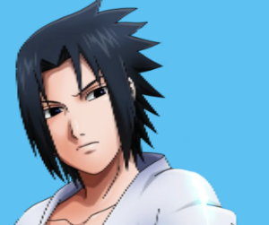

Selecione um Ninja!
Tema do Personagem:
-

- 
Naruto
Protagonista da série, Naruto é um ninja destemido que domina a arte do chakra. Ele é conhecido por desencadear o poderoso Rasengan para aniquilar seus oponentes. Sua habilidade única é invocar a força da raposa de nove caudas.